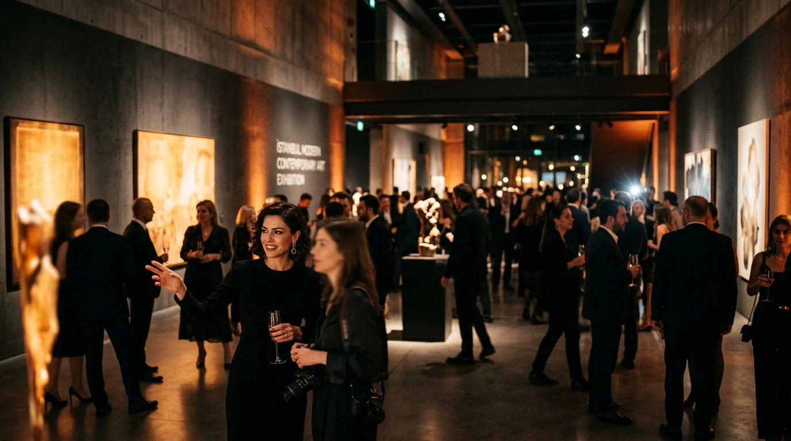
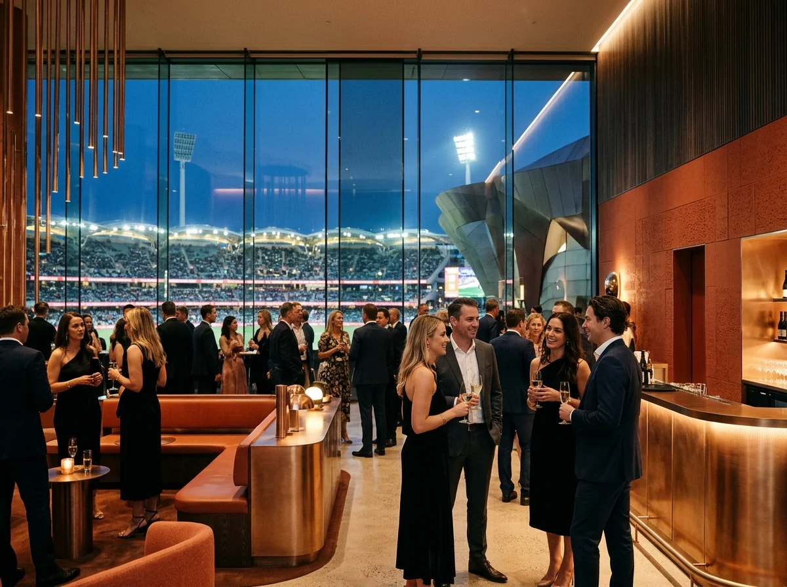
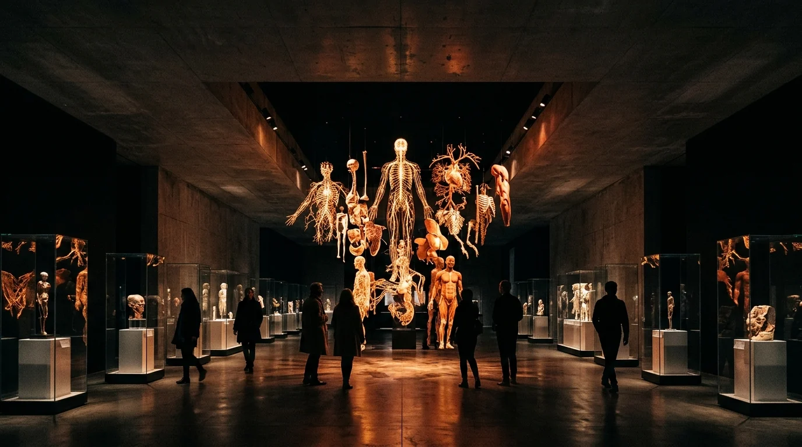

[ STRATEJİK İLETİŞİM, MEDYA İLİŞKİLERİ VE ETKİNLİK YÖNETİMİ AJANSI — İSTANBUL (EST. 2005) ]
MARKALAR İÇİN GÜVEN, İTİBAR VE KALICI ETKİ İNŞA EDİYORUZ.
2005 yılından bu yana İstanbul merkezli olarak ulusal ve uluslararası markalara; stratejik iletişim danışmanlığı, medya ilişkileri, kriz yönetimi ve büyük ölçekli etkinlik organizasyonu alanlarında bütünleşik halkla ilişkiler (PR) çözümleri sunuyoruz. Hikayenizi doğru mecralarda, doğru hedef kitleyle buluşturarak kurumunuzu geleceğe taşıyoruz.

[ BİRLİKTE DEĞER ÜRETTİĞİMİZ KURUMLARDAN SEÇKİN REFERANSLAR ]
Türkiye Jokey Kulübü
Fenerbahçe Spor Kulübü
BODY WORLDS
Türk Nöroşirürji Derneği
TOÇEV
Arjantin İstanbul Başkonsolosluğu
Versace 19.69
Türk Yoğun Bakım Derneği
PBIC İstanbul
01
TANIŞMA & AJANS MANİFESTOSU
Merhaba! Bir kahve alır mısınız? İletişimin gücünü samimiyet ve stratejiyle birleştiriyoruz.
Tanışmalar, doğru kurgulandığında markalar için yeni ufuklar, kalıcı itibar ve sürdürülebilir kazançlar demektir. 3D İletişim Hizmetleri olarak 2005 yılında İstanbul'da kendi hikayemizi yazmaya başladık. Geride bıraktığımız yirmi yılı aşkın sürede, Mecidiyeköy'deki ofisimizin kapısını çalan yüzlerce kurum yöneticisi, girişimci, sivil toplum lideri ve bilim insanıyla aynı masa etrafında buluştuk. Bu yolculukta yerel KOBİ'lerin ulusal çapta güçlü ve kalıcı markalara, köklü holdinglerin ise topluma değer katan, güvenilir ve sosyal sorumluluk bilinci yüksek kurumlara dönüşmesine bizzat liderlik ettik.
20+ Yıl
2005'ten bu yana kesintisiz PR uzmanlığı
150+ Büyük Proje
Ulusal ve uluslararası kampanya
360° Bütünleşik
Gelenekselden dijitale tam kapsamlı iletişim yaklaşımı
02
ÇALIŞMA ALANLARIMIZ
Uçtan Uca Stratejik
İletişim Uzmanlığı
Tüm Hizmet Detayları
Stratejik İletişim Danışmanlığı
Kurumsal hedeflerle uyumlu, veri ve içgörü temelli yıllık iletişim stratejileri, mesaj mimarisi ve itibar planlaması.
Medya İlişkileri Yönetimi
Basın bültenleri, özel röportaj kurguları, medya buluşmaları ve gündem yönetimi ile doğru mecralarda güçlü yankı.
Kriz Yönetimi ve İtibar Koruma
Proaktif risk haritalama, kriz el kitapları, sözcü koçluğu ve zorlu dönemlerde kurumsal güveni koruyan acil eylem planları.
Kurumsal İletişim
İç iletişim, lider konumlandırma, kurumsal sosyal sorumluluk (KSS) projeleri ve çok paydaşlı itibar mimarisi.
Etkinlik Yönetimi ve Prodüksiyon
Konsept geliştirme, mekan tasarımı, VIP protokol, basın akreditasyonu ve büyük ölçekli organizasyon prodüksiyonu.
Sponsorluk Yönetimi
Stratejik sponsorluk eşleştirme, hak yönetimi, aktivasyon kurgusu ve sponsorluk yatırımının medya etki ölçümlemesi.
Pazarlama İletişimi (MarCom)
Yeni ürün lansmanları, marka hikayeleştirme, kanaat önderi iş birlikleri ve ticari hedefleri destekleyen kampanyalar.
Promosyon ve Yaratıcı Tanıtım Uygulamaları
Özel editoryal basın kitleri, deneyimsel promosyon kurguları ve yüksek hatırlanırlığa sahip marka materyalleri.
03
NELER YAPIYORUZ?
İz Bırakan Seçilmiş
Projelerimiz
Tüm Projeleri İncele

TJK "Dünya Kadınlar Günü Koşusu"
Toplumsal farkındalık ve spor kültürünü buluşturan özel koşunun medya ilişkileri, konuk ağırlama ve ulusal görünürlük kampanyası.

BODY WORLDS İstanbul Sergisi
Dünyaca ünlü anatomi sergisinin İstanbul prömiyeri için basın ön gösterimi, bilim dünyası paydaş iletişimi ve rekor ziyaretçi erişimi.

Fenerbahçe SK "Rüya 1 Gün"
Çocukların hayallerini gerçeğe dönüştüren anlamlı sosyal sorumluluk projesinin hikaye kurgusu, prodüksiyon desteği ve medya iletişimi.

PBIC E-Spor Dünya Şampiyonası
Dünyanın dört bir yanından takımları İstanbul'da buluşturan global e-spor şampiyonasının yerel/uluslararası basın ve organizasyon iletişimi.
04
ÇALIŞMA İLKELERİMİZ — TOPLANTI ODASI
Müşteri Değil, Aynı Takımın Oyuncusuyuz
Masaya yalnızca bir ajans olarak değil, markanızın itibarını kendi sorumluluğu bilen stratejik bir yol arkadaşı olarak oturuyoruz.
Takım Çalışması
Kurumunuzun iç ekipleriyle omuz omuza çalışır, markanızın kültürünü içeriden anlayarak ortak hedeflere aynı tutkuyla koşarız.
Etik Değerler
Doğruluk, mesleki şeffaflık ve medya etiğinden ödün vermeden; kısa vadeli gürültü yerine uzun ömürlü kurumsal güven inşa ederiz.
Gerçek İletişim
Abartılı sloganlar yerine sahici, insana dokunan ve toplumda gerçek karşılık bulan samimi marka hikayeleri kurgularız.
Yaratıcı Sonuç Odaklılık
Özgün fikirleri disiplinli operasyon ve ölçülebilir medya çıktılarıyla birleştirerek her kampanyada somut iş değeri üretiriz.
05
SIKÇA SORULAN SORULAR
Merak Edilenler & Süreçlerimiz
Stratejik iletişim danışmanlığı, kriz yönetimi ve bütünleşik etkinlik prodüksiyonu süreçlerimiz hakkında en sık sorulan soruların yanıtları.
2005 yılında İstanbul'da kurulan 3D İletişim Hizmetleri; sağlık ve tıbbi uzmanlık dernekleri, spor kulüpleri ve uluslararası turnuvalar, kültür-sanat sergileri, sivil toplum kuruluşları, diplomasi ve konsolosluk temsilcilikleri, moda, perakende ve teknoloji sektörlerinde 20 yılı aşkın deneyime sahiptir. Ajans; stratejik iletişim danışmanlığı, medya ilişkileri yönetimi, kriz ve itibar yönetimi, kurumsal iletişim, etkinlik prodüksiyonu, sponsorluk yönetimi, pazarlama iletişimi (MarCom) ve yaratıcı tanıtım uygulamaları olmak üzere 8 ana uzmanlık alanında 360 derece bütünleşik hizmet verir.
Her iş birliğimiz kapsamlı bir mevcut durum analizi, paydaş haritalama ve rekabet değerlendirmesiyle başlar. Kurumun iş hedefleriyle birebir örtüşen yıllık iletişim stratejisi, ana mesaj mimarisi ve medya planı hazırlanır. Kriz yönetimi tarafında ise riskler ortaya çıkmadan önce proaktif kriz el kitapları, sözcü eğitimleri ve acil durum senaryoları oluşturulur. Olası bir kriz anında 7/24 aktif kriz masası kurularak şeffaf, tutarlı ve itibar koruyucu iletişim adımları hızla hayata geçirilir.
BODY WORLDS İstanbul Sergisi, PBIC E-Spor Dünya Şampiyonası ve Türkiye Jokey Kulübü Dünya Kadınlar Günü Koşusu gibi yüksek katılımlı projelerde kanıtlandığı üzere; etkinlik konsepti, mekan ve prodüksiyon yönetimi ile basın iletişimi aynı stratejik ekip tarafından yürütülür. Etkinlik öncesi gündem oluşturma, basın akreditasyonu, özel röportaj kurguları, VIP ve kanaat önderi ağırlama süreçleri eş zamanlı planlanarak hem sahada kusursuz deneyim hem de ulusal ve uluslararası medyada maksimum erişim sağlanır.